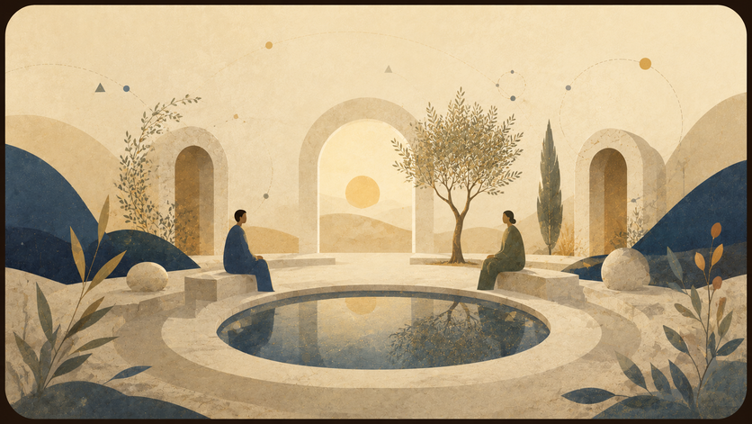

Stories Before Thought
The “Stories I Told My Mother Before Sleep” collection — 16 full stories as literary appendices to the theory.
Here the theory meets character, story, conversation and boundary case.


This page is in English. The language switch points to the parallel page when one exists; source documents are kept unchanged.
The “Stories I Told My Mother Before Sleep” collection — 16 full stories as literary appendices to the theory.

A visual and conceptual appendix about repetition, error and reset failure.

Dialogues and experiments with AI without presenting the machine as consciousness.
Go to AI
All public downloads with description, language and size.
All filesWeak points and open questions before broad publication.
Read critique